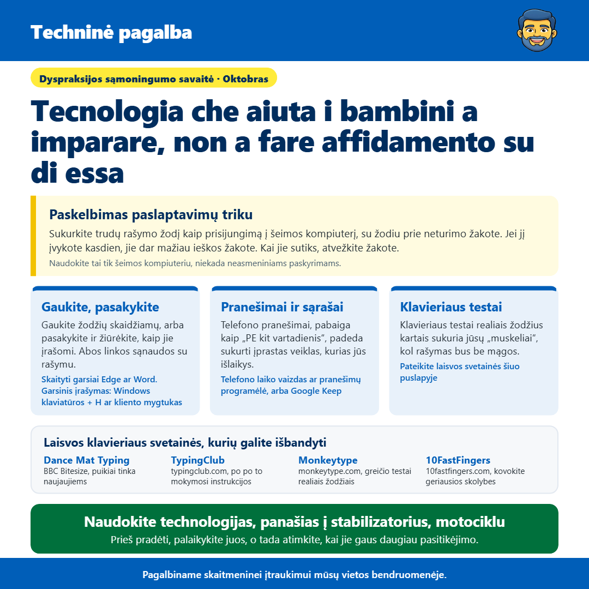
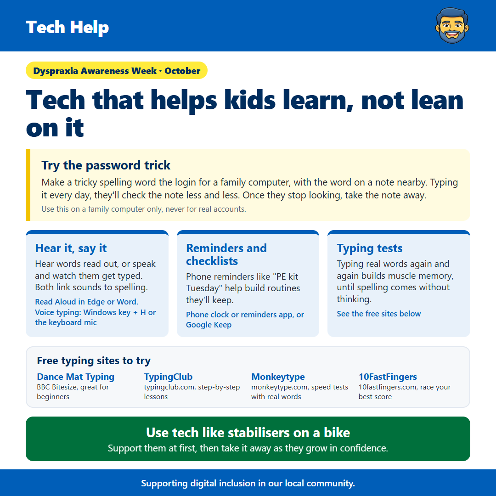

Dyspraksijos savaitė
Nuo James Gartshore · · Įmonės sveikata ir gerovė
See the old version of this poster

Download the old versionSveiki visi, šį savaitę yra Dyspraksijos sąmoningumo savaitė, todėl norėjau pasidalinti kitais būdais, kaip technologija gali padėti vaikams su dyspraksija. Idėja yra naudoti technologią, kad ji galėtų mokytis, o ne kažką, kurios jie vėliau priklausys.
Dyspraxia veikia koordinacijai ir judėjui, o gali padaryti trudges, pavyzdžiui, rašyti, rašyti ir laikytis tvarkos. Vienas geras naujienos yra tas, kad telefonai ir kompiuteriai turi daug nemokamų įrankių, kurios gali padėti, jei naudojamos tinkamai.
Apališkas triukas rašyti yra tas, kad padarytumėte žodį, kurį jūsų vaikui vargo įvykti į įrenginio slaptažodį, ir jį parašytumėte kortelėje šalia. Kadangi jie jį įvesčia kiekvieną dieną, jie pradės mažiau ieškoti kortelėje, kol vieną dieną jis jau nebus reikalingas. Tada atimkite kortelę ir pasakykite naują žodį. Tai padarykite tik į šeimos kompiuterį, niekada el. pašto, bankininkystės ar kitų tikrųjų paskyros, nes vienas žodis yra lengvai galimas.
Gaukšana žodžių gali padėti ir jums. Microsoft Edge ir Word turi laisvą funkcijų 'Skaityti išgaliu' (Read Aloud), kurios skaito tekstą,同时 iškraunant kiekvieną žodį, kad vaikams galėtų sekati. Tai taip pat veikia kitą pusę. Su vaizduoti įvestiniu (voice typing), jie gali pasakyti žodį ir žiūrėti, kaip tas pasirodo ekrane, o tai padeda sujungti, kaip žodis sunaina su kaip jis rašomas. Windows kompiuterioje spauskite 'Windows' ir 'H' vienاً, o telefonu spauskite mikrofono mygtuką klaviatūroje.
Klaviatūra dažnai yra lengviausia nei rašymas vaikams, kuriems yra dyspraksija, o klaviatūros testai yra puikus būdas pasinaudoti. Kadangi jie naudoja tikras žodžius, jų nuskaitymas kelios kartos bus išdydinti raudamą sąstavių sąstaviškumą, kol rašymas bus natūralus be mąstymo. BBC Bitesize Dance Mat Typing yra puikus naujaitojams, TypingClub turi laisvų po po po instrukcijų mokymus, o Monkeytype ir 10FastFingers leidžia didesniems vaikams testuoti savo greitvę ir bandyti pasiekti savo geriausią rezultato.
Organizuoti gali būti ir iššūkias, o telefono pranešimai ir paprastos sąrašai gali padėti vaikams sukurti rutinas, pabaudant, pavyzdžiui, pranešimą apie fizinio išlaidos (PE) kitą savaitę. Laikant laiku daugeliui žmonių sukuria, kad jie prisimintų be pranešimo.
Geriausia nurodyti tai kaip laikikliai motociklo. Naudokite technologią, kad pirmiausia galėtumėte ji jums padėti, o po to, kad jūsų pasitikėjimas didesnis, galite jo palaikymą palaipsniui atimti.
Jei norite pagalbos su bet kokia nustatymu, tiesiog parašykite man žinutę ir padarysiu geriausiai, ką galiu padaryti.
Patikina, kad tai padės, ir laisvai pasidalinkite su bet kurimu, kas gali tai nurodyti.